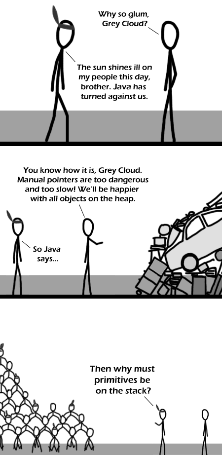

Comic JK 306
When I Feel Like It
⇤
<
?
>
⇥

⇤
<
?
>
⇥
Forum
.
RSS
.
Digg
.
Facebook
.
Reddit
.
Twitter
.
Stumbleupon
Congrats on updating before xkcd. I was beginning to wonder whether or not it was actually Monday, but you proved that it is. >What? I thought xkcd updated first.... In any case, this one is great. C ftw! You can make all the jokes you want about java, but it has made the right compromise between consistency, performance, usability and transparency when it comes value vs. reference types - That being said, autoboxing, of course, sucks... The *Sun* shines... X) > nice pun. Why are primitives on the stack? Think of it this way. In Java, _ALL_ local variables are either primitives or pointers to objects, and are created on the stack. This simplifies a lot of things and allows for more optimization. When you compared two primitives using a comparison operator, and compare two objects, why do values get compared for ints, and addressed get compared for objects? Because, internally, it's the same damn operation with no dereferencing required. Things declared locally will never be preserved, and should be on the stack, because that way, there is no need for reference-counting and garbage collection and such. Freeing up stack space is just one instruction to change the stack pointer when all is said and done. >I think you missed the joke. He's asking why the hunter gatherers are being segregated >wow are you on cocaine because it is so deep and inspired I only thinks like this on cocaine ? --the cocaine jk troll >>Agreed, you have to have *something* on the stack, and it might as well be the small fixed-size variables (ie primitives). Doesn't make them feel any better though. I just question why primitives are used constantly, even when optimization is not an issue. Why not make the classes the norm, and the primitives the exception, so we don't get all these silly exceptions. (Primitives in generics, anyone?) Oh wait, there's no operator overloading... Nevermind... >Try D--you get operator overloading and garbage collection (and native compilation) >Try Ruby. Somehow there are no primitives. As an assembly programmer, what's a heap? > A heap is a software construct to track allocated memory. Your anus is a primitive on the stack